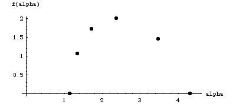

f(alpha) exercise 4 solution
Recall in the
oblique asymptotes
question of the tau(q) curve, we observed
alpha
min
= 1.15
and
alpha
max
= 4.32.
In exercise 3 we
saw
f(1.35) = 1.06
(q=3),
f(1.72) = 1.72
(q=1),
and
f(3.48) = 1.45
(q=-1).
As before, we calculate
tau(0) = 2
and
alpha(0) = 2.38
, so
f(alpha) = 2.38*0 + 2 = 2.
Here is a plot of these points.

Return to
f(alpha) exercises
.